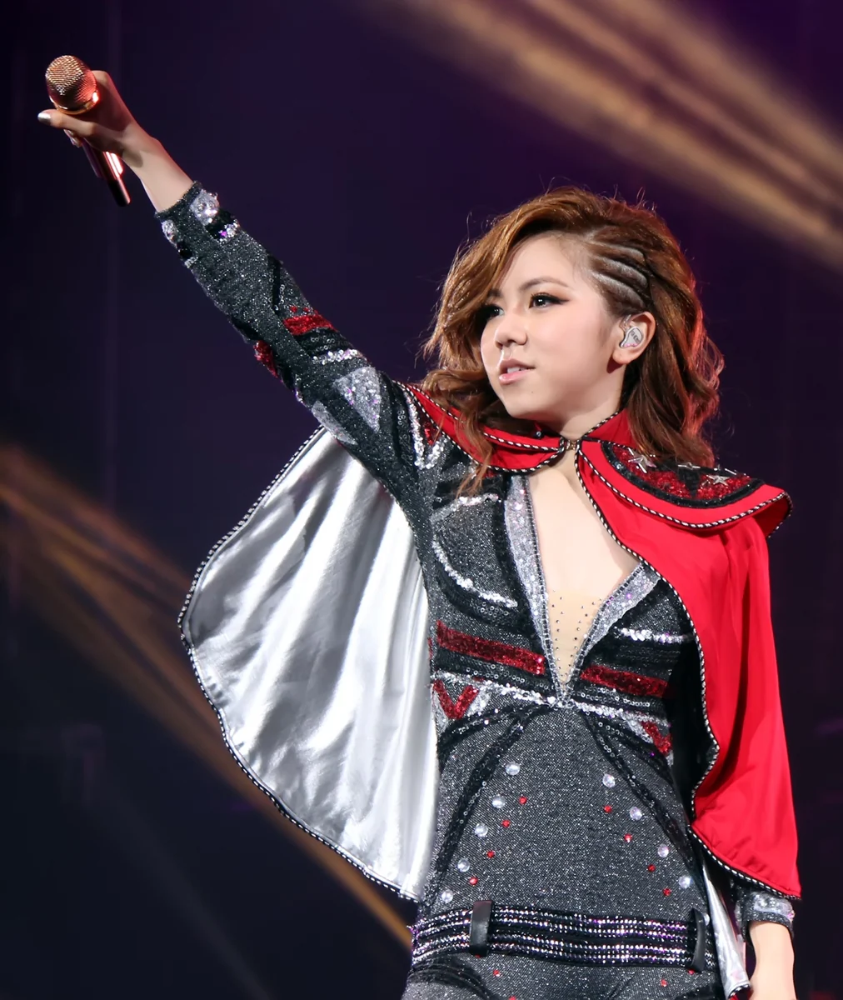
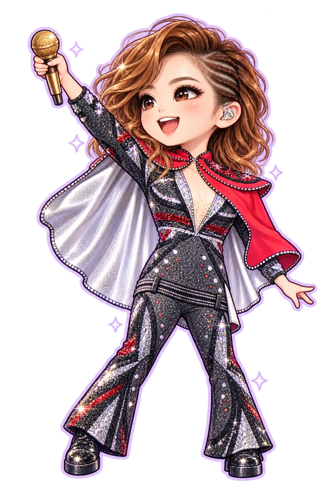
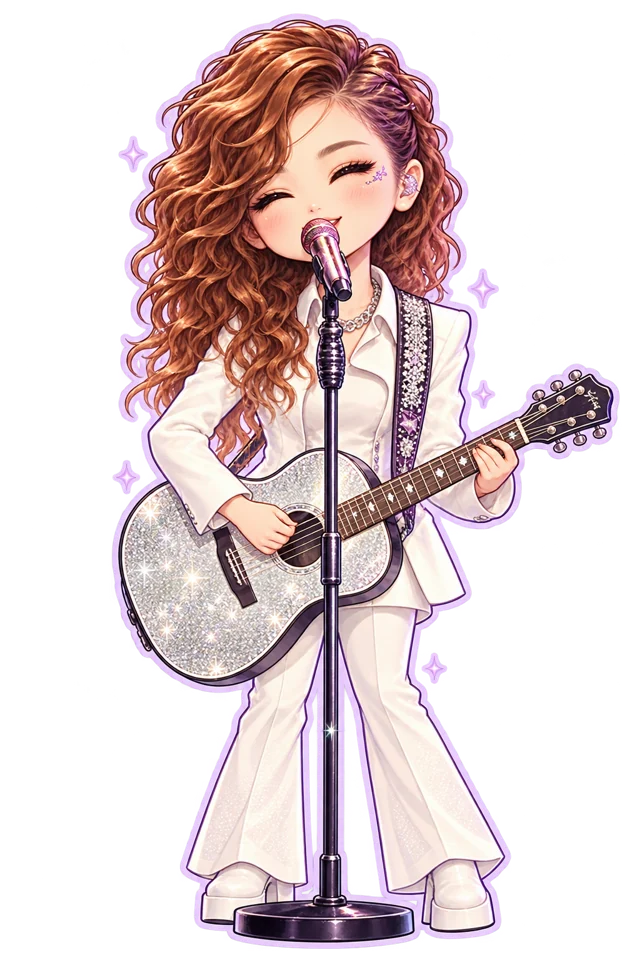

G.E.M. FAN UNIVERSE EST. 2008
把热爱，
唱成光。
从耳机里的一首歌，到万人合唱的星海。
这里收藏邓紫棋的音乐，也收藏每一份因她而闪耀的热爱。
12 首精选入门作品
06 帧珍藏舞台记忆
∞关于热爱的可能
✧ 一个由热爱出发的非官方粉丝创作 · 课堂展示

LIVE ARCHIVE 2015
ONE VOICE.
A WHOLE UNIVERSE.
A WHOLE UNIVERSE.
ADMIT ONE你，也是这片
星海的一部分。GEMVERSE / FOREVER IN TUNE
星海的一部分。GEMVERSE / FOREVER IN TUNE

小小身体 · 大大能量01 / MUSIC PLANET
总有一首，唱中你的心事。
从温柔耳语到全力呐喊，
找到此刻属于你的声音。
这个星球暂时没有匹配的歌曲。试试换个关键词，或收藏一首喜欢的作品。
点开作品查看聆听入口与故事。心情标签与推荐语为本站编辑；作品年份按原始版本记录。
TODAY'S LITTLE RITUAL
今天的你，想听见怎样的答案？
选一种心情，让一首歌来陪你。
02 / WORDS THAT STAY
有些字句，
会替我们发光。
一点歌词，一段共鸣。
把完整的故事，留在歌里听。
01 / 04
03 / THE JOURNEY
一颗星，一步一步发亮。
舞台之外，是一位创作歌手
持续写下自己的故事。
G.E.M.
GET EVERYBODY
MOVING

音乐，是一路向前的坐标。
04 / LIVE IN THE MOMENT
把这一刻，按下珍藏。
六帧真实演出影像。
点击放大，重返那些发光的夜晚。
摄影作品均保留作者与许可说明；照片年份为拍摄年份。完整署名可在大图与「资料来源」查看。
05 / FAN LAB
热爱，也可以很好玩。
把喜欢变成一点小小的创造。
这是属于你的应援实验室。
01 / LIGHT IT UP本机应援
为她，点亮一束光。
点击荧光棒，让今天的热爱亮起来。
0次属于你的闪耀
本机记录 · 每个自然日可打卡一次
02 / YOUR FAN PASSAI 同人形象
做一张专属应援卡。
选个舞台造型，带走你的热爱纪念。
PNG 图片 · 原创应援文案 · 不含个人联系方式
03 / HOW WELL DO YOU KNOW G.E.M.?你的「棋」妙知识，
随时重玩 · 认识她多一点你的「棋」妙知识，
有几分？
5 道关于音乐与生涯的小题。
答案有来源，答完领取电子徽章。
06 / OUR LITTLE GALAXY
把你的声音，留在这片星河。
是某首歌救回了坏心情，
还是某个舞台让你开始相信自己？
本机留言模式
留言仅保存在此浏览器，同一设备刷新后仍可查看。可导出备份；跨设备共享留言可启用下方 GitHub 留言区。
每一份喜欢，都有回声。
示例星星带「示例」标记的卡片是设计演示内容，不代表真实访客发言。